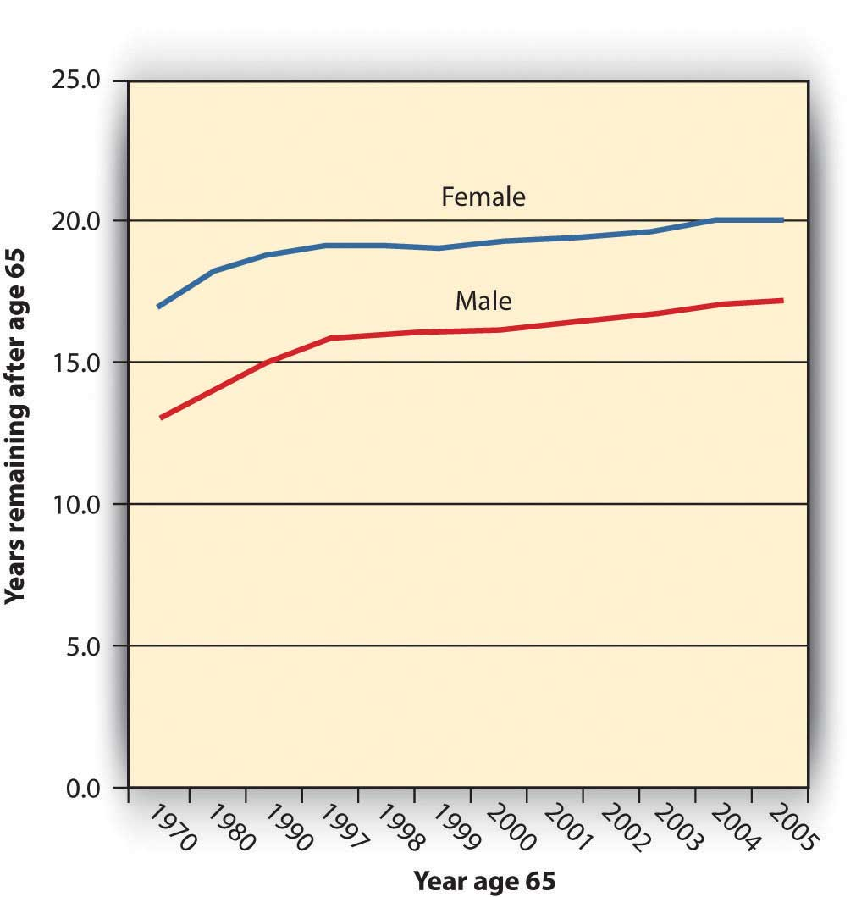
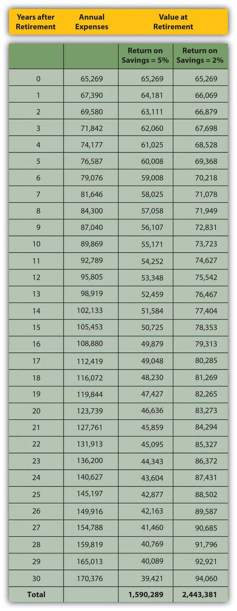
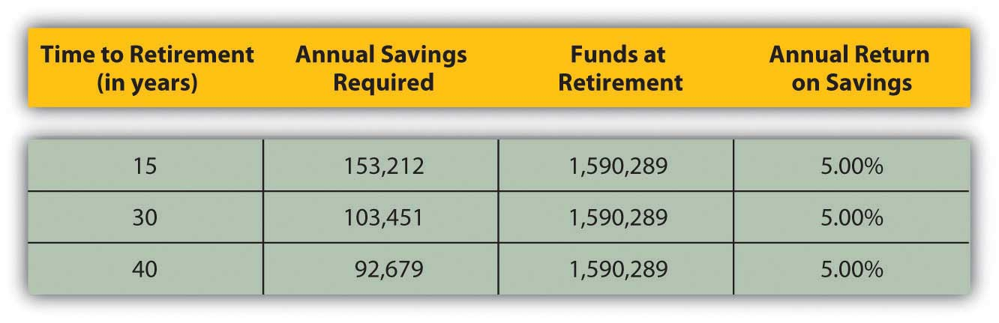
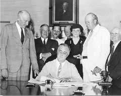
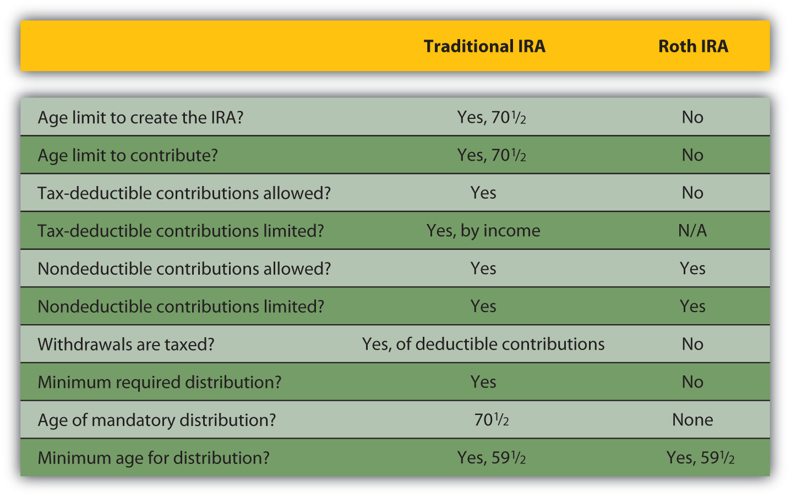
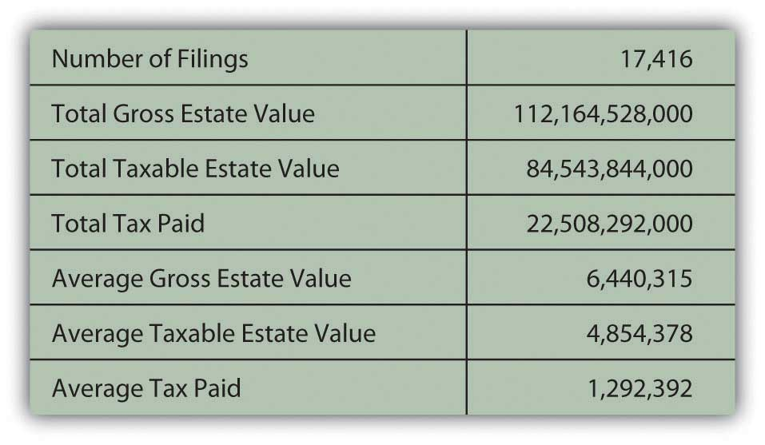

While insurance is about protecting what you have, retirement and estate planning is about protecting what you may have in the future. Insuring what you have means finding the best way to protect it. Retirement planning, on the other hand, means finding the best way to protect the life that you’d like to be living after you stop earning income from employment. Estate planning involves protecting what you have even after your death. So retirement planning and estate planning are plans to create and then protect an accumulation of wealth.
Both types of planning also ask you to ask some of the following questions that you really can’t answer:
Planning, especially for retirement, should start as early as possible, allowing the most time for savings to occur and accrue. Ironically, that’s when it is hardest to try to imagine answers to these questions. Understanding the practical means to planning and saving for retirement can help you get started. If your plans are flexible, they can adapt to the unexpected as it happens, which it inevitably will.
Retirement planning involves the same steps as any other personal planning: figure out where you’d like to be and then figure out how to get there from where you are. More formally, the first step is to define your goals, even if they are no more specific than “I want to be able to afford a nice life after I stop getting a paycheck.” But what is a “nice life,” and how will you pay for it?
It may seem impossible or futile to try to project your retirement needs so far from retirement given that there are so many uncertainties in life and retirement may be far away. But that shouldn’t keep you from saving. You can try to save as much as possible for now, with the idea that your plans will clarify as you get closer to your retirement, so whatever money you have saved will give you a head start.
Chris and Sam were young urban professionals until their children were born. Tired of pushing strollers through the subways, they bought a home in the suburbs. They are happy to provide a more idyllic lifestyle for their kids but miss the “buzz” and convenience of their urban lifestyle. When their children are on their own and Chris and Sam are ready to retire, they would like to sell their home and move back into the city.
Chris and Sam are planning to use the value of their house to finance a condo in the city, but they also know that real estate prices are often higher in the more desirable urban areas and that living expenses may be higher in the future. Now in their midthirties, Chris and Sam are planning to retire in thirty years.
Chris and Sam need to project how much money they will need to have saved by the time they wish to retire. To do that, they need to project both their future capital needs (to buy the condo) and their future living expense in retirement. They also need to project how long they may live after retirement, or how many years’ worth of living expenses they will need, so that they won’t outlive their savings.
They know that they have thirty years over which to save this money. They also know, as explained in Chapter 4 "Evaluating Choices: Time, Risk, and Value", that time affects value. Thus, Sam and Chris need to project the rate of compounding for their savings, or the rate at which time will affect the value of their money.
To estimate required savings, in other words, you need to estimate the following:
As difficult as these estimations seem, because it is a long time until retirement and a lot can happen in the meantime, you can start by using what you know about the present.
One approach is to assume that your current living expenses will remain about the same in the future. Given that over the long run, inflation affects the purchasing power of your income, you factor in the effect inflation may have so that your purchasing power remains the same.
For example, say your living expenses are around $25,000 per year and you’d like to have that amount of purchasing power in retirement as well. Assuming your costs of living remain constant, if you are thirty years from retirement, how much will you be spending on living expenses then?
The overall average annual rate of inflation in the United States is about 3.25 percent,The average is calculated over the period from 1913 to 2009. U.S. Bureau of Labor Statistics, http://www.bls.gov/cpi/ (accessed May 1, 2009). so you would have to spend $25,000 × (1 + 0.0325)30 = $65,269 per year to maintain your standard of living thirty years from now. Put another way, thirty years from now, one dollar will buy only about thirty-eight cents worth of today’s expenses. This calculation comes from the relationship of time and value, studied in Chapter 4 "Evaluating Choices: Time, Risk, and Value". In this case, $25,000 is the present value of your expenses, and you are looking for the future value, given that your expenses will appreciate at a rate of 3.25 percent per year for thirty years.
As you can see, you would need about two-and-a-half times your current spending just to live the life you live now. Fortunately, your savings won’t be just “sitting there” during that time. They, too, will be compounding to keep up with your needs.
You may use your current expenses as a basis to project a more or less expensive lifestyle after retirement. You may anticipate expenses dropping with fewer household members and dependents, for example, after your children have grown. Or you may wish to spend more and live a more comfortable life, doing things you’ve always wanted to do. In any case, your current level of spending can be a starting point for your estimates.
How much you need to have saved to support your annual living expenses after retirement depends on how long those expenses continue or how long you’ll live after retirement. In the United States, life expectancy at age sixty-five has increased dramatically in the last century, from twelve to seventeen years for males and from twelve to twenty years for females, due to increased access to health care, medical advances, and healthier lives before age sixty-five.U.S. Department of Health and Human Services, “Health, United States, 2008: With Special Feature on the Health of Young Adults (Health United States),” Center for Disease Control, National Center for Health Statistics, 2008. Figure 11.2 "Life Expectancy at Age 65 in the United States, 1970–2005" shows the data from 1970 to 2005.
Figure 11.2 Life Expectancy at Age 65 in the United States, 1970–2005
If life expectancy continues to increase at these rates, in thirty years your life expectancy at age sixty-five could be twenty-eight to thirty years. In that case, your retirement savings will have to provide for your living expenses for as long as thirty years. Put another way, at age thirty-five you have thirty years to save enough to support you for thirty years after that.
You can use what you know about time and value (from Chapter 4 "Evaluating Choices: Time, Risk, and Value") to estimate the amount you would need to have saved up by the time you retire. Your annual expenses in retirement are really a series of cash flows that will grow by the rate of inflation. At the same time, your savings will grow by your rate of return, even after you are making withdrawals to cover your expenses.
Say that when you retire, you have your retirement funds invested so they are earning a return of 5 percent per year. Assume an annual inflation rate of 3.25 percent and that your annual expenses when you retire are $65,269 (as adjusted for inflation in the example above).
Figure 11.3 "Estimating Annual Expenses and Savings Needed at Retirement" shows what your situation would look like.
Figure 11.3 Estimating Annual Expenses and Savings Needed at Retirement
The amount you need at retirement varies with the expected rate of return on your savings. While you are retired, you will be drawing income from your savings, but your remaining savings will still be earning a return. The more return your savings can earn while you are retired, the less you have to have saved by retirement. The less return your savings can earn in retirement, the more you need to have saved before retirement.
In Figure 11.3 "Estimating Annual Expenses and Savings Needed at Retirement", the total amount needed at retirement is only about $1.5 million if your remaining savings will earn 5 percent while you are retired, but if that rate of return is only 2 percent, you would have to begin retirement with almost $2.5 million.
Let’s assume your return on savings is 5 percent. If you want to have $1,590,289 in thirty years when you retire, you could deposit $367,957 today and just let it compound for thirty years without a withdrawal. But if you plan to make an annual investment in your retirement savings, how much would that have to be?
In the example above, if you make regular annual deposits into your retirement account for the next thirty years, each deposit would have to be $23,936, assuming that your account will earn 5 percent for in thirty years. If the rate of return for your savings is less, you would have to save more to have more at retirement. If your retirement savings can earn only 2 percent, for example, you would have to deposit $60,229 per year to have $2,443,361 when you retire. Your retirement account grows through your contributions and through its own earnings. The more your account can earn before you retire, the less you will have to contribute to it. On the other hand, the more you can contribute to it, the less it has to earn.
The time you have to save until retirement can make a big difference to the amount you must save every year. The longer the time you have to save, the less you have to save each year to reach your goal. Figure 11.4 "Time to Retirement and Annual Savings Required" shows this idea as applied to the example above, assuming a 5 percent return on savings and a goal of $1,590,289.
Figure 11.4 Time to Retirement and Annual Savings Required
The longer the time you have to save, the sooner you start saving, and the less you need to save each year. Chris and Sam are already in their thirties, so they figure they have thirty years to save for retirement. Had they started in their twenties and had forty years until retirement, they would not have to save so much each year. If they wait until they are around fifty, they will have to save a lot more each year. The more you have to save, the less disposable income you will have to spend on current living expenses, making it harder to save. Clearly, saving early and regularly is the superior strategy.
When you make these calculations, be aware that you are using estimates to figure the money you’ll need at retirement. You use the expected inflation rate, based on its historic average, to estimate annual expenses, historical statistics on life expectancy to estimate the duration of your retirement, and an estimate of future savings returns. Estimates must be adjusted because things change. As you progress toward retirement, you’ll want to reevaluate these numbers at least annually to be sure you are still saving enough.
To estimate required savings, you need to estimate
You must save more for retirement if
While knowing the numbers clarifies the picture of your needs, you must reconcile that picture with the realities that you face now. How will you be able to afford to save what you need for retirement?
There are several savings plans structured to help you save—some offer tax advantages, some don’t—but first you need to make a commitment to save.
Saving means not spending a portion of your disposable income. It means delaying gratification or putting off until tomorrow what you could have today. That is often difficult, as you have many demands on your disposable income. You must weigh the benefit of fulfilling those demands with the cost of not saving for retirement, even though benefit in the present is much easier to credit than benefit in the future. Once you resolve to save, however, employer, government, and individual retirement plans are there to help you.
Employers may sponsor pension or retirement plans for their employees as part of the employees’ total compensation. There are two kinds of employer-sponsored plans: defined benefit plans and defined contribution plans.
A defined benefit planA pension plan sponsored by an employer in which the employer commits to providing a specific amount of benefit based on wages and tenure to retired employees. is a retirement plan, sometimes called a pension planAn employer-sponsored, defined benefit plan providing a regular, specified amount of pension, based on wages and years of service., funded by the employer, who promises the employee a specific benefit upon retirement. The employer can be a corporation, labor union, government, or other organization that establishes a retirement plan for its employees. In addition to (or instead of) a defined benefit plan, an employer may also offer a profit-sharing plan, a stock bonus plan, an employee stock ownership plan (ESOP), a thrift plan, or other plan. Each type of plans has advantages and disadvantages for employers and employees, but all are designed to give employees a way to save for the future and employers a way to attract and keep employees.
The payout for a defined benefit plan is usually an annual or monthly payment for the remainder of the employee’s life. In some defined benefit plans, there is also a spousal or survivor’s benefit. The amount of the benefit is determined by your wages and length of service with the company.
Many defined benefit plans are structured with a vestingThe process of earning full ownership in an employer-sponsored retirement plan according to length of service. option that limits your claim on the retirement fund until you have been with the company for a certain length of time. For example, Paul’s employer has a defined benefit plan that provides for Paul to be 50 percent vested after five years and fully vested after seven years. If Paul were to leave the company before he had worked there for five years, none of his retirement fund would be in his account. If he left after six years, half his fund would be kept for him; after ten years, all of it would be.
With a defined benefit plan your income in retirement is constant or “fixed,” and it is the employer’s responsibility to fund your retirement. This is both an advantage and a disadvantage for the employee. Having your employer fund the plan is an advantage, but having a fixed income in retirement is a drawback during periods of inflation when the purchasing power of each dollar declines. In some plans, that drawback is offset by automatic cost of living increases.
Defined benefit plans also carry some risk. Most companies reserve the right to change or discontinue their pension plans. Furthermore, the pension payout is only as good as the company that pays it. If the company defaults, its pension obligations may be covered by the Pension Benefit Guaranty Corporation (PBGC)An agency of the federal government that guarantees defined benefit pensions in the case of employer default., an independent federal government agency. If not, employees are left without the benefit. Even if the company is insured, the PGBC may not cover 100 percent of employees’ benefits.
Founded in 1974, the PBGC is funded by insurance premiums paid by employers who sponsor defined benefit plans. If a pension plan ends (e.g., through the employer’s bankruptcy) the PBGC assumes pensions payments up to a limit per employee. Currently, the PBGC pays benefits to approximately 640,000 retirees and insures the pensions of about 1,305,000 employees.The Pension Benefit Guaranty Corporation, “Mission Statement,” http://www.pbgc.gov/about/about.html (accessed May 1, 2009). There is some concern, however, that if too many defined benefit sponsors fail, as could happen in a widespread recession, the PBGC would not be able to fully fund its obligations.
To avoid the responsibility for employee retirement funds, more and more employers sponsor defined contribution retirement plansA pension plan sponsored by an employer in which the employer commits to providing a specific amount of contribution to a retirement account owned by an active employee.. Under defined contribution plans, each employee has a retirement account, and both the employee and the employer may contribute to the account. The employer may contribute up to a percentage limit or offer to match the employee’s contributions, up to a limit. With a matching contribution, if employees choose not to contribute, they lose the opportunity of having the employer’s contribution as well as their own. The employee makes untaxed contributions to the account as a payroll deduction, up to a maximum limit specified by the tax code. The maximum for defined contribution plans is 25 percent of the employee’s compensation, with a cap in 2009 of $49,000. Defined contribution plans known as 401(k) plans had a maximum contribution limit in 2009 of $16,500.
Defined contribution plans have become increasingly popular since section 401(k) was introduced into the tax code in 1978. The 401(k) plansAn employer-sponsored defined contribution plan. Contributions may be made by employer, employee, or both. The employee’s contributions are tax deferred until distribution after age 59.5 and are limited by the Internal Revenue Code.—or 403b plans for employees of nonprofits and 457 plans for employees of government organizations—offer employees a pretax (or tax-deferred) way to save for retirement to which employers can make a tax-deductible contribution.
The advantages of a 401(k) for the employee are the plan’s flexibility and portability and the tax benefit. A defined contribution account belongs to the employee and can go with the employee when he or she leaves that employer. For the employer, there is the lower cost and the opportunity to shift the risk of investing funds onto the employee. There is a ceiling on the employer’s costs: either a limited matching contribution or a limit set by the tax code.
The employer offers a selection of investments, but the employee chooses how the funds in his or her account are diversified and invested. Thus, the employee assumes the responsibility—and risk—for investment returns. The employer’s contributions are a benefit to the employee. Employers can also make a contribution with company stock, which can create an undiversified account. A portfolio consisting only of your company’s stock exposes you to market risk should the company not do well, in which case, you may find yourself losing both your job and your retirement account’s value.
The federal government offers a mandatory retirement plan for all citizens except federal government employees and railroad workers, known as Social SecurityThe mandatory retirement program sponsored by the U.S. government to provide supplemental retirement income. It is funded by a tax (FICA) paid by employers and employees and by self-employed individuals who act as both employer and employee.. Social Security is funded by a mandatory payroll tax shared by employee and employer. That tax, commonly referred to as Federal Insurance Contributions Act (FICA), also funds Medicare (see Chapter 10 "Personal Risk Management: Insurance"). Social Security was signed into law by President Franklin D. Roosevelt in 1935 to provide benefits for old age and survivors and disability insurance for workers (OASDI). The Social Security Administration (SSA) was established to manage these “safety nets.”
Figure 11.6 President Franklin D. Roosevelt Signing the Social Security Act, August 14, 1935Library of Congress photo, LC-US262-123278, http://www.ssa.gov/history/fdrsign.html (accessed May 1, 2009).
We can never insure one hundred percent of the population against one hundred percent of the hazards and vicissitudes of life. But we have tried to frame a law which will give some measure of protection to the average citizen and to his family against the loss of a job and against poverty-ridden old age…It is, in short, a law that will take care of human needs and at the same time provide for the United States an economic structure of vastly greater soundness.
- Franklin D. Roosevelt, August 14, 1935Franklin D. Roosevelt, “Statement on Signing the Social Security Act,” August 14, 1935, http://www.fdrlibrary.marist.edu/odssast.html (accessed May 1, 2009).
Data provided by the SSA show that almost 51,500,000 beneficiaries receive an average monthly benefit of $1,057. The federal government’s total annual payment of benefits totals $653 billion. Most of the beneficiaries are retirees (63.6 percent) or their spouses and children (5.7 percent), but there are also survivors, widows, and orphans receiving about 12.6 percent of benefits and disabled workers, spouses, and children receiving approximately 18.3 percent of benefits.U.S. Social Security Administration, “Monthly Statistical Snapshot, March 2009,” 2009, http://www.ssa.gov/policy/docs/quickfacts/stat_snapshot/ (accessed May 1, 2009).
Social Security is not an automatic benefit but an entitlement. To qualify for benefits, you must work and contribute FICA taxes for forty quarters (ten years). Retirement benefits may be claimed as early as age sixty-two, but full benefits are not available until age sixty-seven for workers born in 1960 or later. If you continue to earn wage income after you begin collecting Social Security but before you reach full retirement age, your benefit may be reduced. Once you reach full retirement age, your benefit will not be reduced by additional wage income.
The amount of your benefit is calculated based on the amount of FICA tax paid during your working life and your age at retirement. Up to 85 percent of individual Social Security benefits may be taxable, depending on other sources of income.Retrieved from the Social Security Administration archives, http://www.socialsecurity.gov/history/fdrstmts.html#signing (accessed November 23, 2009). Each year, the SSA provides each potential, qualified beneficiary with a projection of the expected monthly benefit amount (in current dollars) for that individual based on the individual’s wage history.
Social Security benefits represent a large expenditure by the federal government, and so the program is often the subject of debate. Economists and politicians disagree on whether the system is sustainable. As the population ages, the ratio of beneficiaries to workers increases—that is, there are more retirees collecting benefits relative to the number of workers who are paying into the system.
Many reforms to the system have been suggested, such as extending the eligibility age, increasing the FICA tax to apply to more income (right now it applies only to a limited amount of wages, but not to income from interest, dividends, or investment gains), or having workers manage their Social Security accounts the same way they manage 401(k) plans. Some of these proposals are based on economics, some on politics, and some on social philosophy. Despite its critics, Social Security remains a popular program on which many Americans have come to rely. You should, however, be aware that Social Security can be amended and faces possible underfunding.
Keep in mind that in 1935 when Social Security was created, life expectancy for American males was only sixty-five, the age of Social Security eligibility. Social Security was never meant to be a retirement income, but rather a supplement to retirement income, merely “some measure of protection against…poverty-ridden old age.”Retrieved from the Social Security Administration archives, http://www.socialsecurity.gov/history/fdrstmts.html#signing (accessed November 23, 2009).
As part of the Federal Employees Retirement System (FERS), the U.S. government also offers special retirement plans to its employees, including a Thrift Savings Plan (TSP) for civilians employed by the United States and members of the uniformed services (i.e., Army, Navy, Air Force, Marine Corps, Coast Guard, National Oceanic and Atmospheric Administration, and Public Health Service).
Federal, state, and local government plans; plans for public school teachers and administrators; and church plans are exempt from the rules of the Employee Retirement Income Security Act of 1974 (ERISA) and from some rules that govern retirement plans of private employers under the Internal Revenue Code. In some states, public school teachers pay into a state retirement system and do not pay federal Social Security taxes (or receive Social Security benefits) for the years they are working as teachers.
Nevertheless, many plans for public employees are defined benefit plans providing annuities upon retirement, similar to but separate from plans for employees in the private sector.
Any individual can save for retirement without a special “account,” but since the government would like to encourage retirement savings, it has created tax-advantaged accounts to help you do so. Because these accounts provide tax benefits as well as some convenience, it is best to use them first in planning for retirement, although their use may be limited.
Individual retirement accounts (IRAs) were created in 1974 by ERISA. They were initially available only to employees not covered by an employer’s retirement plan. In 1981, participation was amended to include everyone under the age of 70.5.Wikipedia, “Legislative History of IRAs,” http://en.wikipedia.org/wiki/Individual_retirement_account (accessed May 23, 2012). IRAs are personal investment accounts, and as such may be invested in a wide range of financial products: stocks, bonds, certificate of deposits (CDs), mutual funds, and so on. Types of IRAs differ in terms of tax treatment of contributions, withdrawals, and in the limits of contributions.
The Traditional IRAAn individual retirement account for which contributions are tax deductible and withdrawals are taxed. is an account funded by tax-deductible and/or nondeductible contributions. Deductible contributions are taxed later as funds are withdrawn, but nondeductible contributions are not. In other words, you either pay tax on the money as you put it in, or you pay tax on it as you take it out.
A great advantage of a Traditional IRA is that principal appreciation (interest, dividend income, or capital gain) is not taxed until the funds are withdrawn. Withdrawals may begin without penalty after the age of 59.5. Funds may be withdrawn before age 59.5, but with penalties and taxes applied. Contributions may be made until age 70.5, at which time required minimum distributions (withdrawals) of funds must begin.
Because they create tax advantages, contributions to a Traditional IRA are limited, currently up to $5,000 (or $6,000 for someone over the age of fifty). That limit on deductible contributions becomes smaller (the tax benefit is phased out) as income rises. The Internal Revenue Service (IRS) provides a worksheet to calculate how much of your contribution is taxable with your personal income tax return (Form 1040).
For the Roth IRAAn individual retirement account for which contributions are not deductible but withdrawals are not taxed., created in 1997, contributions are not tax deductible, but withdrawals are not taxed. You can continue to contribute at any age, and you do not have to take any minimum required distribution. The great advantage of a Roth IRA is that capital appreciation is not taxed.
As with the Traditional IRA, contributions may be limited depending on your income. If you have both a Traditional and a Roth IRA, you may contribute to both, but your combined contribution is limited.
Figure 11.9 "Differences between the Traditional and the Roth IRAs" is an adaptation of a guide provided by the IRS to the key differences between a Traditional and a Roth IRA.U.S. Department of the Treasury, Publication 590, Internal Revenue Service, 2009.
Figure 11.9 Differences between the Traditional and the Roth IRAs
A rolloverA retirement plan that may accept or distribute funds from another qualified retirement account without tax consequence or penalty. is a distribution of cash from one retirement fund to another. Funds may be rolled into a Traditional IRA from an employer plan (401(k), 403b, or 457) or from another IRA. You may not deduct a rollover contribution (since you have already deducted it when it was originally contributed), but you are not taxed on the distribution from one fund that you immediately contribute to another. A transferThe movement of funds in a tax-advantaged retirement account from one trustee or asset manager to another that is not considered a withdrawal or distribution of funds. moves a retirement account, a Traditional IRA, from one trustee or asset manager to another. Rollovers and transfers are not taxed if accomplished within sixty days of distribution.
People who are self-employed wear many hats: employer, employee, and individual. To accommodate them, there are several plans that allow for deductible contributions.
A simplified employee pension (SEP)A retirement plan for employers with less than one hundred employees or for the self-employed, usually using individual IRAs (SEP-IRAs) as retirement accounts. is a plan that allows an employer with few or even no other employees than himself or herself to contribute deductible retirement contributions to an employee’s Traditional IRA. Such an account is called a SEP-IRA and is set up for each eligible employee. Contributions are limited: in any year they can’t be more than 25 percent of salary or $46,000 (in 2008), whichever is less. If you are self-employed and contributing to your own SEP-IRA, the same limits apply, but you must also include any other contributions that you have made to a qualified retirement plan.U.S. Department of the Treasury, Publication 560, Internal Revenue Service, 2009.
A savings income match plan for employees (SIMPLE)A retirement plan for employers with less than one hundred employees or for the self-employed. is a plan where employees make salary reduction (before tax) contributions that the employer matches. If the contributions are made to a Traditional IRA, the plan is called a SIMPLE IRA Plan. Any employer with fewer than one hundred employees who were paid at least $5,000 in the preceding year may use a SIMPLE plan. There are also SIMPLE 401(k) Plans. Deductible contributions are limited to $10,500 in 2008 for age forty-nine and below, for example.U.S. Department of the Treasury, Publication 560, Internal Revenue Service, 2009.
A Keogh PlanA tax-advantaged retirement plan for the self-employed. is another retirement vehicle for small or self-employers. It can be a defined benefit or a defined contribution qualified plan with deductible contribution limits.
Your estateAll real and personal property of a decedent at the time of death, not including properties in joint ownership or assets that pass directly to a named beneficiary. includes everything you own. Other aspects of financial planning involve creating and managing your assets while you are alive. Estate planning is a way to manage your assets after your death. Age is not really a factor, because death can occur at any time, at any age, by any cause. Arranging for the disposition of your estate is not a morbid concern but a kindness to those you leave behind. Death is a legal and financial event—and in some cases a taxable event—as well as an emotional one. Your loved ones will have to deal with the emotional aftermath of your loss and will appreciate your care in planning for the legal and financial outcomes of your death.
Since you won’t be here, you will need to leave a written document outlining your instructions regarding your estate. That is your willA legal document detailing the disposition of assets upon death., your legal request for the distribution of your estate, that is, assets that remain after your debts have been satisfied. If you die intestateTo die without a valid will, leaving the disposition of assets and debts to the law., or without a will, the laws of your state of legal residence will dictate the distribution of your estate.
You can write your own will so long as you are a legal adult and mentally competent. The document has to be witnessed by two or three people who are not inheriting anything under the terms of the will, and it must be dated and signed and, in some states, notarized. A holographic willA handwritten or oral will. is handwritten; it may be more difficult to validate. A statutory willA will written on a preprinted form. is a preprinted will that you can buy from a store or in a software package. Consider, however, that a will is a legal document. Having yours drawn up by a lawyer may better insure its completeness and validity in court.
ProbateThe legal process of validating a will and overseeing the orderly payment of debts and the distribution of assets. is the legal process of validating a will and administering the payment of debts and the distribution of assets by a probate court. Probate courts also distribute property in the absence of a will. Probate is not required in every case, however. Probate is not required if the deceased
Besides the details of “who gets what,” a will should name an executorThe person named in a will who administers the payments of debts and the distribution of assets, as described in the will., the person or persons who will administer the payment of your debts and the distribution of your remaining assets, according to your wishes as expressed in your will. If you have legal dependents, your will should name a guardian for them. You may also include a “letter of last instruction” stating the location of important documents, safe deposit keys, and bank accounts and specifying your funeral arrangements.
There are several types of wills. A simple willA will leaving all property to a spouse. leaves everything to a spouse. For comparatively small estates that are not taxable (e.g., estates with assets under a million dollars in value), a simple will may be the most appropriate kind. A traditional marital share willA will leaving one-half of the estate to the surviving spouse. leaves one-half of the estate to a spouse and the other half to others, usually children. This may lower any tax burden on your estate and your spouse’s.
A stated dollar amount willA will leaving a specific monetary amount to each beneficiary. allows you to leave specific amounts to beneficiaries. A drawback of this type of will is that the stated amounts may be reasonable when your will is drawn up but may not reflect your intentions at the time of your death, perhaps many years later. For that reason, rather than specifying specific amounts, it may be better to specify percentages of your asset values you would like each beneficiary to have.
You may change or rewrite your will at any time, but you should definitely do so as your life circumstances change, especially with events such as marriage or divorce, the birth of a child, and the acquisition of significant assets, such as a house. If the changes in your circumstances are substantial, you should create a new will.
It is possible that you will become mentally or physically disabled before you die and unable to direct management of your assets. To prepare for this possibility, you may create a living willA document conveying your intentions for your personal care and management of your assets should you become unable to do so before your death. with instructions for your care in that event. You may appoint someone—usually a spouse, child, or sibling—who would have power of attorneyThe legal right to act on your behalf should you become unable to do so before your death., that is, the right to act on your behalf, especially as regards financial and legal decisions. That power may be limited or unlimited (such as a “durable power of attorney”) and is restricted to certain acts or dependent on certain circumstances.
Along with granting power of attorney, your living will may include a health care proxy, requesting that medical personnel follow the instructions of a designated family member who expresses your wishes concerning your end-of-life treatment. Many people request, for example, that they not be revived or sustained if they cannot experience some quality of life. Be sure to update your living will, however, as over time your views may change and as medical and technological advances change our notions of “quality of life.”
A trustA legal entity created to own and manage assets for the benefit of beneficiaries. is a legal entity created by a trustor, or grantor, who owns assets managed by a trustee or trustees for the benefit of a beneficiary or beneficiaries. A testamentary trustA trust created by a will that becomes effective upon the death of the grantor. may be established by a will so that beneficiaries who are unable to manage assets (minor children or disabled dependents) can benefit from the assets but have them managed for them. A living trustA trust created while the grantor is alive. is established while the grantor is alive. Unlike a will, it does not become a matter of public record upon your death. A revocable living trustA trust created while the grantor is living that may be revoked or changed by the grantor; therefore, ownership of the grantor’s assets remains under the control of the grantor. can be revoked by the grantor, who remains the owner of the assets, at any time. Such a trust avoids the probate process but may not shield assets from estate taxes. An irrevocable living trustA trust created while the grantor is living, that may not be revoked or changed by the grantor. The trust is considered a legal entity, and ownership of the grantor’s assets is transferred to the trust. cannot be changed; the grantor gives up ownership of his or her assets, which passes to the trust, avoiding probate and estate taxes. However, the trust then becomes a separate taxable entity and pays tax on its accumulated income.
Another way to avoid probate and estate taxes is to gift assets to your beneficiaries while you are alive. Ownership of the assets passes to the beneficiaries at the time of the gift, so the assets are no longer included in your estate. The federal government and many state governments levy a gift tax for gifts exceeding certain limits. In 2009, the annual exclusion from federal tax was $13,000 per recipient, for example. Also, the federal government does not tax gifts to spouses and to pay others’ medical bills or tuitions.
There are limits to this kind of tax-free distribution of funds, however. For example, the federal government considers any “gift” you make within three years prior to your death as part of your taxable estate. Gifting nevertheless is a way to reduce the value of an estate. Some parents also prefer to make funds available or to gift them to their children when the children need them more—for example, earlier in their adult lives when they may not have accrued enough wealth to make a down payment on a house.
Most trusts, whether testamentary or living, revocable or irrevocable, are created to avoid either the probate process or estate taxes or both. The probate process can be long and costly and therefore a burden for your executor, your beneficiaries (who may have to wait for their distributions), and your estate.
Estate taxes diminish the value of your estate that will be distributed to your beneficiaries. For that reason, one of the purposes of estate planning is to try to minimize those taxes.
The federal estate tax is “a tax on your right to transfer property at your death.”U.S. Department of the Treasury, “Estate and Gift Taxes,” Internal Revenue Service http://www.irs.gov (accessed May 3, 2009). In 2009, you are required to file an estate tax return if the taxable estate is valued at $3,500,000 or more. In states with estate taxes, you must file a return if the taxable estate value is more than $1,000,000 or other similar cutoff amount. (For various philosophical and practical reasons, the estate tax is the object of much political debate, so those filing limits are subject to change.)
A taxable estate is the gross estate less allowable deductions. The tax law defines the gross estate as the following:
Allowable deductions include debts that you owed at the time of death, including mortgage debt, your funeral expenses, the value of property passing directly to your surviving spouse (the marital deduction), charitable gifts, and the state estate tax.U.S. Department of the Treasury, Publication 950, Internal Revenue Service, 2009.
Figure 11.12 "Estate Tax Filings in 2007" shows the scope of the estate tax in the U.S. economy for 2007, the latest year for which data is available.
Figure 11.12 Estate Tax Filings in 2007
In the United States, with a total population of more than 306 million people, those 17,416 tax returns represent about 0.0057 percent of the population, paying about 0.9393 percent of the total taxes collected by the IRS in 2007.U.S. Department of the Treasury, 2008, “SOI Tax Stats—IRS Data Book 2007,” Internal Revenue Service, http://www.irs.gov/taxstats (accessed May 3, 2009).
While estate taxes tax your assets in your estate, inheritance taxes tax your assets in the hands of your beneficiaries. Because of the costs involved, beneficiaries potentially may not be able to afford to inherit or preserve wealth within the family. For this reason and others, many states have redefined or repealed their inheritance tax laws.
Estate taxes also can be more costly to beneficiaries if assets are not liquid—for example, if a large portion of the value of your taxable estate is in your home or business. Your survivors may be required to liquidate or sell assets just to pay the estate taxes. To avoid that, some estate plans include purchasing a life insurance policy for the anticipated amount of the estate tax, thus providing a source of liquid funds or cash for tax payment.
Minimizing taxes owed is a goal of estate planning, but not the only goal. Your primary objective is to see that your dependents are provided for by the distribution of your assets and that your assets are distributed as you would wish were you still there to distribute them yourself.
There are many kinds of wills, including